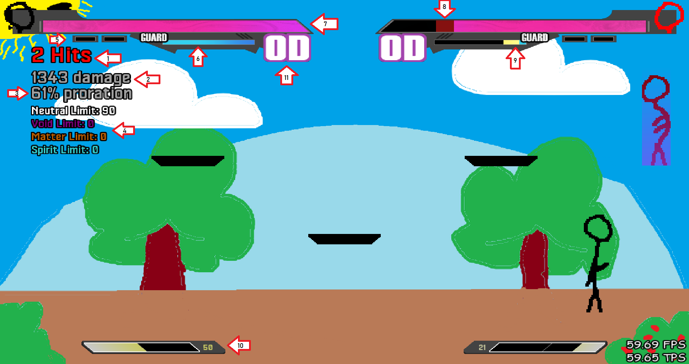

{% extends 'base.html' %}
{% block title %}HUD{% endblock %}
{% block content %}
HUD

1: Number of hits in a combo.
2: The damage inflicted in a combo.
3: The proration applied in the ongoing combo.
4: The four different limits.
5: Indication of the number of round won and of how many round must be won to win the game.
6: The guard bar which is important in defense when blocking and parrying.
7: The life bar, if one's own life bar is empty, they lose the round.
8: The red life bar indicates more visally how much damge a combo has dealt.
9: Bonus guard bar which appears when one is restand.
10: Your meter bar which is used for your supers, ultimate, and type switches.
11: Your overdrive meter, used for your offensive overdrive and defensive overdrive.
{% endblock %}